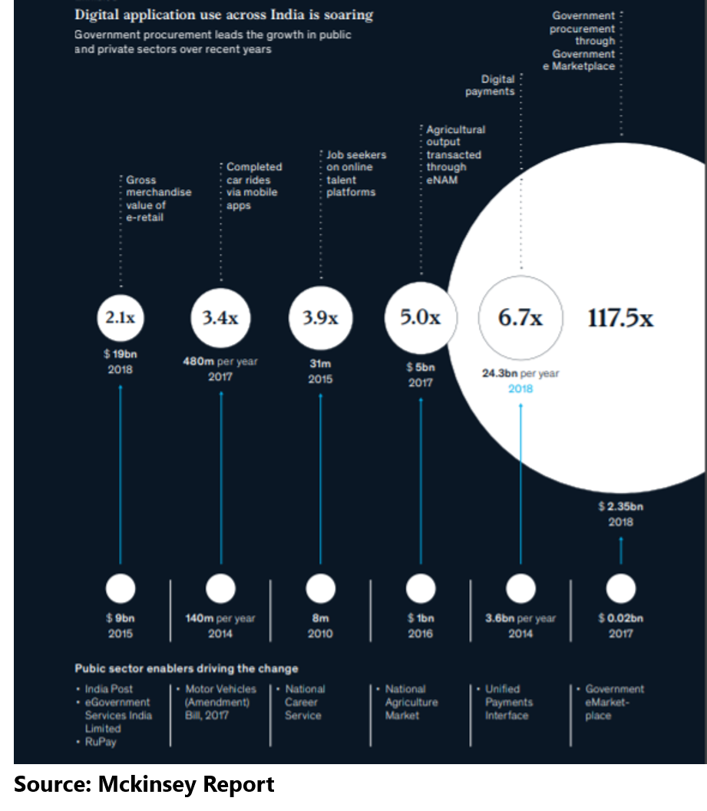
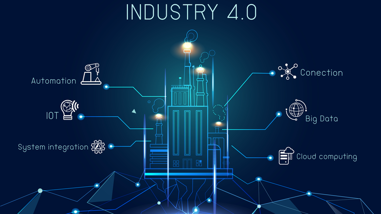
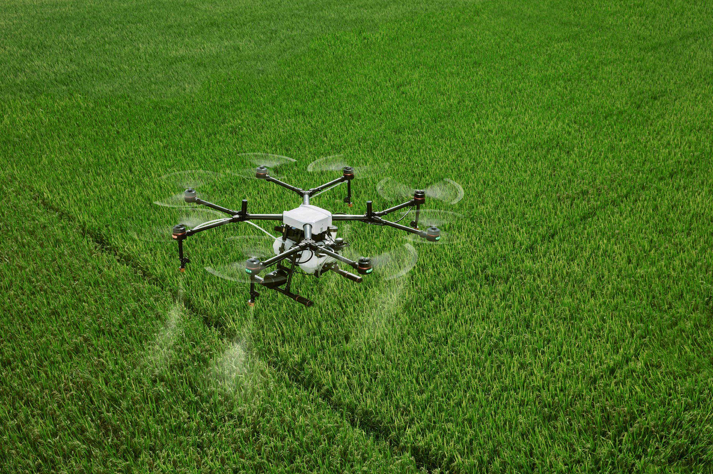

Report
The 10 year report of Technology usage in India has been displayed below
Indian companies are in a strong position to leapfrog competitors from developed countries in the adoption of business intelligence and data driven decision making. The presence of a large customer base, near universal access to mobile devices, affordable data management solutions and lack of technology debt have primed Indian businesses to invest in big data and advanced analytics technologies in the coming year.
Industries
Enterprises have long managed their customer facing operations (front office), production/logistics (mid office) and support functions (back office) as three independent silos. However, today’s digital world is vastly different than it was a few years ago. Today, the way a customer makes decisions is very different, and competition is far more intense to provide the best possible customer experience. This requires integrated back, mid and front office operations, from supply chain to operations, and from finance to IT. Therefore, the trend to connect the enterprise will gain further traction during 2020.
Education
Due to the pandemic situation.Technology has played an important role in online classes.
Technological tools can help the teachers from administrative tasks like grading and testing to develop individual student relationships. Teachers can access various types of learning tools through technology to give students differentiated learning experiences outside of the curriculum.
Health Care
Health care in India faces several challenges including inadequate access, low insurance penetration and a growing chronic disease burden. At the same time, traditional business models have found it hard to show attractive returns on investment.

We've seen doctors struggling in this pandemic situation,Technology has helped a lot in Research and Development of various vaccines and cure.
Agriculture
The industry as a whole is facing huge challenges, from rising costs of supplies, a shortage of labor, and changes in consumer preferences for transparency and sustainability. There is increasing recognition from agriculture corporations that solutions are needed for these challenges. In the last 10 years, agriculture technology has seen a huge growth in investment, with $6.7 billion invested in the last 5 years and $1.9 billion in the last year alone. Major technology innovations in the space have focused around areas such as indoor vertical farming, automation and robotics, livestock technology, modern greenhouse practices, precision agriculture.
Conclusion

Therefore we see that it is the 21st century and technology has played an important role in Industrial,Educational,Health Care and Agricultural Development.I hope the rise in technology brings us out of this pandemic situation and brings peace.